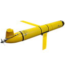
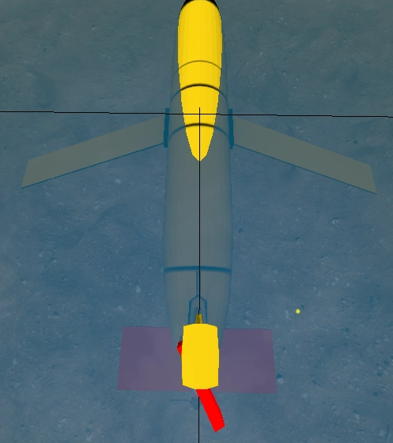
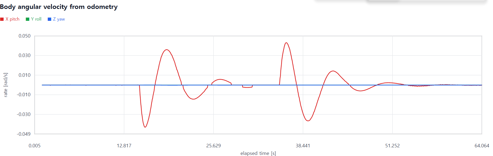

DAVE · ROS 2 · GAZEBO · 5인 팀 프로젝트
서로 다른 회피 알고리즘을
같은 수중 환경에서 검증하다
실기체 반복시험의 제약을 해결하기 위해 SITL 공통환경을 먼저 구축했습니다. 저는 환경 통합과 4-fin 위협 어뢰의 제어·유도를 맡고, 팀 모듈이 독립적으로 개발될 수 있도록 데이터 경계를 정리했습니다.
- 기간
- 2026.07 — 2026.08
- 팀 구성
- 5명, 어뢰·회피·제어 분담
- 담당
- 공통환경·위협 어뢰
- 기술
- C++, ROS 2, Gazebo, DAVE
DAVE 자산에서
공통환경으로
프로젝트 소개 다음 단계는 모델을 새로 그리는 일이 아니라, 검증된 DAVE 자산의 구성과 경계를 정확히 파악하는 것이었습니다.
DAVE가 제공하는 수중 월드와 BlueROV2, Slocum 모델, Gazebo 플러그인을 기반으로 시작했습니다. 기존 자산을 처음부터 제작한 것은 아니며, visual·collision·link·joint·sensor와 hydrodynamic 설정을 분석한 뒤 BlueROV와 위협 어뢰가 같은 환경에서 상태와 구동기 데이터를 주고받도록 수정·통합했습니다.
이 프로젝트의 수중 월드와 BlueROV2·Slocum 모델은 Field Robotics Lab의 오픈소스 Project DAVE GitHub를 기반으로 합니다. ROS 2 환경 구성은 Project DAVE ROS 2 문서를 참고했으며, MANTA에서는 원본 자산을 분석·수정해 공통 시뮬레이션 환경과 위협 어뢰 모델을 구성했습니다.
- 01기존 자산 검토
DAVE 수중 월드, BlueROV2와 Slocum의 SDF·DAE·플러그인 구성을 확인했습니다.
- 02기본 구동 검증
Gazebo thruster 토픽에 직접 추력 명령을 보내 BlueROV 모델과 구동 인터페이스가 정상적으로 반응하는지 먼저 확인했습니다.
- 03통합 기준 확정
ROS–Gazebo Bridge로 상태와 actuator 명령을 연결하고, 반복 가능한 SITL을 HITL 전 단계의 공통 기준으로 삼았습니다.
실기체를 구매해 여러 위협 조건을 반복 시험하기 어려웠기 때문에, 실제 어뢰 성능을 정밀 재현하기보다 동일한 수중 환경에서 유도 방식 변화에 따른 BlueROV 회피 반응을 비교하는 것을 우선 목표로 정했습니다.
Slocum을
위협 어뢰로
기존 Slocum 글라이더에 직접 4-fin 구동 구조를 추가한 뒤, 큰 주익을 제거해 회피시험용 위협 어뢰로 발전시켰습니다.
DAVE의 원본 Slocum 글라이더를 기준으로 후방 상·하·좌·우 4개 fin과 각 link·joint를 추가하고, fin마다 LiftDrag(양력) 플러그인을 연결했습니다. 이후 Blender로 DAE 구조와 좌표를 확인해 큰 좌우 주익과 연결부를 제거한 메시를 제작하고, SDF의 visual URI를 교체했습니다. 프로펠러의 Thruster 플러그인과 4-fin 제어 구조는 유지해 최종 위협 어뢰 모델로 구성했습니다.



- 01비표준 좌표계 확인
일반적인 +X 전방이 아니라 +Y 전방인 모델이어서 DAE, collision 장축, joint axis와 odometry 반응을 함께 대조했습니다.
- 02Fin 방향과 부호 검증
Top·Bottom fin은 yaw, Left·Right fin은 pitch를 만들도록 구성하고 각 fin에 작은 양·음 입력을 따로 적용해 실제 회전 방향을 확인했습니다.
- 03물리 플러그인 통합
fin의 LiftDrag, 프로펠러의 Thruster와 joint 제어를 분리해 시험하고, 실제 수중시험값이 아닌 SITL 검증용 공학적 추정값임을 구분했습니다.
인터페이스를
함께 정하다
누가 무엇을 계산할지 먼저 나누자, 팀원들이 각자의 알고리즘에 집중할 수 있었습니다.
초기에는 회피 모듈에서 어뢰의 예상 충돌 시간과 위치를 요청했습니다. 하지만 어뢰가 이 값을 확정하면 상대 UUV의 회피 정책과 동역학까지 가정하게 됩니다. 회의를 통해 책임 경계를 다시 그려, 어뢰는 실시간 odometry를 제공하고 회피 모듈이 자체 모델로 충돌을 예측하도록 변경했습니다.
01Gazebo 상태어뢰·BlueROV 위치와 자세
02실시간 Odometry공통 메시지와 좌표계
03회피 모듈자체 모델로 충돌 예측
04제어 명령추진기·Fin 동작 반영
ROS가 익숙하지 않은 팀원의 피드백을 받아 초기화, publisher·subscriber와 callback을 계산 코드에서 분리하고 필요한 데이터만 받을 수 있는 노드·인터페이스를 제공했습니다. 또한 의존성 설치와 빌드를 자동화하고, 여러 터미널의 실행 과정을 5단계 명령으로 표준화했습니다. 설정과 시행착오는 README에 남겨 재현 가능성을 높였습니다.
측정으로 찾은
통합 병목
평균 동작만 보지 않고, 오래된 상태가 사용되는 순간과 CPU를 점유하는 대기 방식을 수치로 확인했습니다.
불필요한 1,000 Hz 경로 제거
사용하지 않는 JointState가 ROS–Gazebo 데이터 경로를 점유하면서 어뢰 odometry의 최대 수신 간격이 약 330 ms까지 늘어났습니다. 발행·브리지·구독 경로를 함께 제거한 뒤 약 100 Hz 상태 입력과 최대 12 ms 간격을 확인했습니다.
Busy-wait 제거
20 Hz 제어 주기를 기다리는 동안 한 코어를 계속 점유하던 구조를, 다음 주기까지 남은 시간만 대기하도록 변경했습니다. 같은 30초 유도 시험에서 CPU 사용률을 102.7%에서 2.4%로 낮추고 Real-time factor를 약 0.62에서 1.00으로 회복했습니다.
330 → 12 msOdometry 최대 수신 간격
102.7 → 2.4%어뢰 제어 노드 CPU
0.62 → 1.00Real-time factor
자이로스코픽 결합 원인 분리
Fin을 중립으로 두고 직진 추력만 입력했는데도 pitch가 발생할 때 yaw가 함께 나타났습니다. 프로펠러의 각운동량과 기체의 pitch 각속도가 결합하면서 회전축에 수직인 Z축 모멘트가 생기는 자이로스코픽 세차 현상으로 원인을 분리했습니다. 모델의 프로펠러 축 관성값이 지나치게 커 효과가 과장된 것을 확인하고 iyy를 0.1에서 0.000625로 수정했습니다. 동일한 +50 N 조건에서 비정상 yaw는 약 121배 줄었지만 pitch 자체는 남았고, 이는 추력선과 무게중심의 높이 차이에서 생긴 별도 모멘트로 관리했습니다.


유도 방식별
통합 검증
기능이 돌아간다는 확인에서 끝내지 않고, 동일한 환경에서 순수 추종(Pure Pursuit, PP)과 비례항법 유도(Proportional Navigation Guidance, PNG)에 따라 회피 결과가 어떻게 바뀌는지 기록했습니다.
- 기능시험 Keyboard 모드에서 프로펠러와 4-fin의 방향·부호를 확인했습니다.
- 기본 추적 Simple Tracking에서 움직이는 BlueROV를 따라가는 동작을 확인했습니다.
- 팀 통합시험 PP 방식 위협에서는 BlueROV의 회피 동작을 확인했습니다.
- 한계 확인 PNG 방식에서는 BlueROV가 대부분 피격되어 위협 유도법에 따라 회피 난이도가 크게 달라짐을 확인했습니다.
명중률이나 회피 성공률을 통계적으로 산출한 시험은 아닙니다. 현재는 ESP32·Teensy·CAN 단위시험을 거쳐 양방향 HITL 폐루프로 확장하고 있습니다.
MANTA GitHub 저장소 ↗